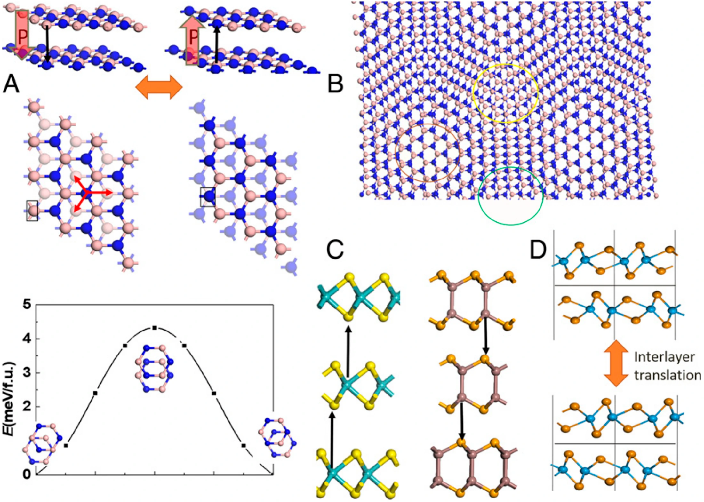
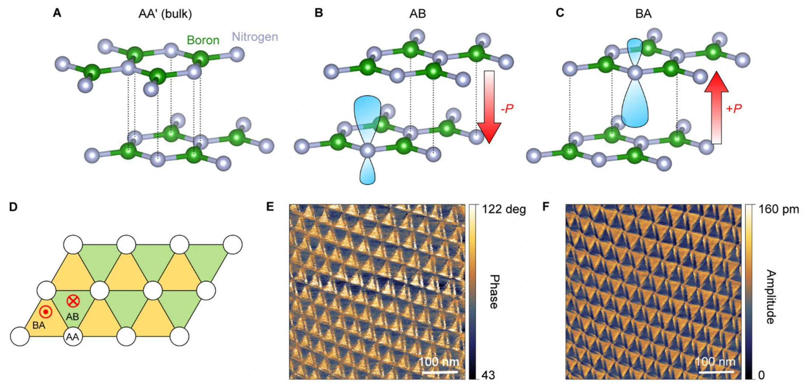
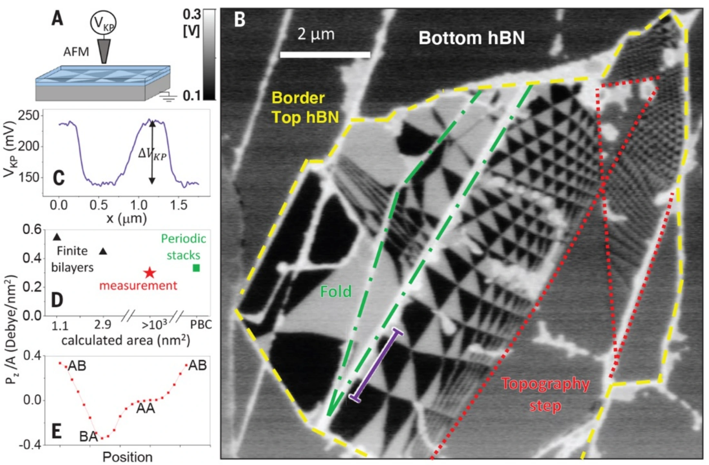
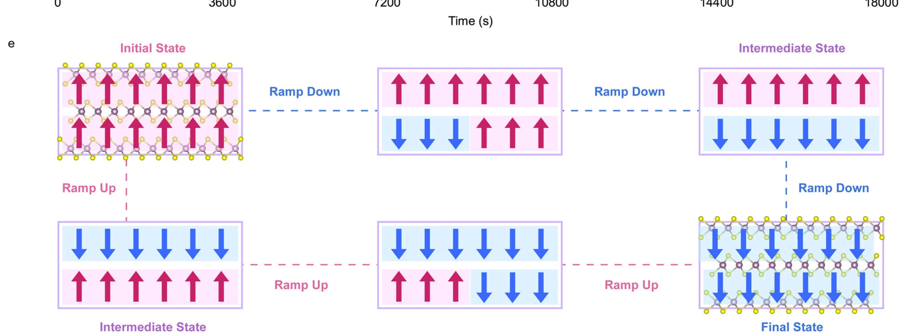
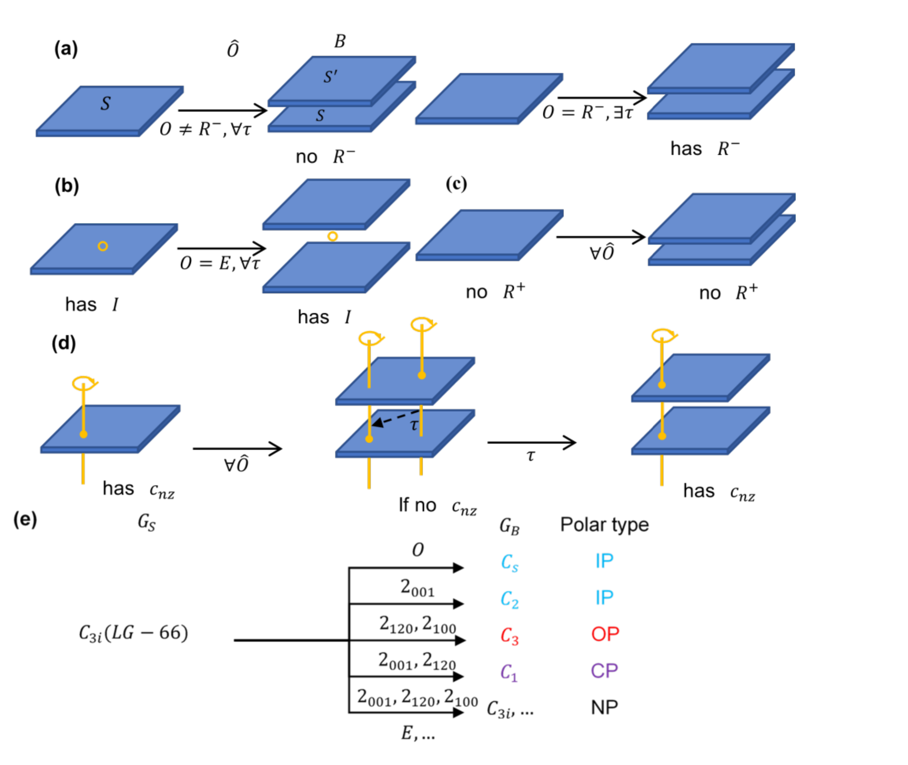

一层没变，为什么叠起来以后会有极化？
先别急着把 sliding ferroelectricity（滑移铁电）理解成“发生了滑动”。这里真正决定状态的是 stacking registry（堆垛注册）：上下两层怎样对齐，会改变界面对称性和电荷分布，从而改变面外偶极；滑移只是连接不同堆垛注册的结构通道。
素材规则：5 篇论文均以项目 Google Drive 中的 PDF 为权威版本。论文英文原文保持可选择、可复制；跨栏或跨页只恢复阅读顺序，不改原句。论文图使用对应 PDF 经 600 DPI 渲染后精确裁切的无损 PNG，不做有损压缩。
1 · Wu & Li 2021：为什么堆垛注册会产生极性？
AB 堆垛 BN 的关键不是“某一层天生带有极化”，而是上下层的相对配位让界面环境不再等价，并产生 interlayer charge transfer（层间电荷转移）。这种非中心对称配位允许形成面外偶极。在这个结构基础上，作者才进一步说明：两个相反极化的堆垛注册可以通过面内平移互相连接。
According to the model of sliding ferroelectricity (21, 22), for the van der Waals bilayer of many 2D materials the two layers are actually not identical, and such inequality leads to a net interlayer charge transfer. Taking the AB stacking boron nitride (BN) bilayer displayed in Fig. 1A as an example, the two layers are related by ℳz mirror reflection symmetry and the in-plane translation t∥ along the B–N bond by a bond length, which places the N atom in the top BN layer atop the hexagon center of the bottom BN layer, while the B atom in the top layer is right over the N atom in the down layer (staggered with B over N marked by the black arrow). Such noncentrosymmetric coordination supports 2D ferroelectricity with an out-of-plane electric polarization, which is estimated to be 2.08 pC/m by first-principles calculations (0.68 μC cm−2 in 3D). An important consequence of this symmetry is a possibility to control the lateral alignment between the two monolayers by an applied electric field. This follows from the fact that two opposite polarization orientations in the AB (BA)-stacked BN are distinguished by a 2t∥ translation along the weakly coupled interface. As a result, the polarization reversal can be regarded as lateral sliding of one BN monolayer with respect to the other, which can be achieved via interlayer translation by one B–N bond length along either one of the three directions marked by the red arrows (three equivalent reversed states), moving the N atoms in the upper layer right over the B atoms of the down layer, as shown in Fig. 1A.
作者先从结构原因出发：许多二维材料组成双层后，上下层在界面处并不等价，因此会出现净层间电荷转移。以 AB 堆垛 BN 为例，非中心对称的原子配位允许形成面外极化，第一性原理给出的二维极化约为 2.08 pC/m。随后作者指出，AB 与 BA 所代表的相反极化可以通过弱耦合界面上的面内平移互相连接，因此极化反转可以描述为一层相对另一层发生横向滑移。

较低的单胞能垒说明这条结构通道可能比较容易发生，但它本身并不能证明真实器件会进行 coherent sliding（整体相干滑移）。
作者实际建立了什么
堆垛注册 → 对称性 / 电荷转移 → Pz，并指出面内平移可以连接相反极化结构。
这里还没有什么
没有证明微米尺度的极化翻转一定由整片同步滑移完成，也没有给出真实的成核或 domain wall（畴壁）动力学。
2 · Yasuda 2021：AA′、AB、BA 为什么对应 0、+P、−P？
AA′ 堆垛恢复整体 inversion symmetry（反演对称性）；AB / BA 则交换上下层的局域注册关系。原子配位和 2pz 轨道环境因此不同，对应相反方向的面外偶极。样品具有小扭角时，会重构成 AB / BA 三角畴，PFM 则提供这些极性畴的空间读出。
The development of vdW assembly enabled the engineering of heterostructures with physical properties beyond the sum of those of the individual layers (16). For example, the Dirac band structure of graphene is dramatically transformed when it is aligned with hexagonal boron nitride (BN) or stacked with another slightly rotated graphene sheet. The modified band structures have led to the discovery of a variety of emergent phenomena related to electron correlations and topology beyond expectations from the original band structure (17–24). In this paper, we demonstrate that the vdW stacking modifies not only the electronic band structure but also the crystal symmetry, thereby enabling the design of ferroelectric materials out of non-ferroelectric parent compounds. Here, we use boron nitride (BN) as an example, but the same procedure can be applied to other bipartite honeycomb 2D materials, such as 2H-type transition metal dichalcogenides (TMDs) (25). Bulk hexagonal BN (hBN) crystals realize AA′ stacking, as displayed in Fig. 1A. This 180° rotated natural stacking order restores the inversion symmetry broken in the monolayer. However, if two hBN monolayer sheets are stacked without rotation (parallel stacking, P), it has been theoretically (26, 27) and experimentally (28–31) shown that polar AB or BA stacking orders (Fig. 1, B and C, respectively) are formed. These configurations are local energy minima in a parallel-stacked form and are realized as metastable crystal structures (26, 27). In AB (BA) stacking, the B (N) atoms in the upper layer sit above the N (B) atoms in the lower layer, while the N (B) atoms in the upper layer lay above the empty site at the center of the hexagon in the lower layer. The vertical alignment of the 2pz orbitals of N and B distorts the orbital of N, creating an electric dipole moment (fig. S3). As a result, AB and BA stacking will exhibit out-of-plane polarization in the opposite directions (25).
这段的核心不是“范德华堆叠会改变能带”，而是它还会改变晶体对称性，因此可以让原本不具铁电性的单层材料在双层堆叠后出现极化。天然 hBN 的 AA′ 堆垛恢复了反演对称性；平行堆叠时则可以形成极性的 AB 或 BA 构型。AB 与 BA 交换了上下层 B、N 原子的局域配位，改变 2pz 轨道环境，最终产生方向相反的面外极化。

结构示意和实验空间读出在同一张图中被对应起来。
3 · Vizner Stern 2021：怎样把堆垛畴对应到真实空间信号？
KPFM（开尔文探针力显微镜）显示，同一个 hBN 界面会出现大片黑白相间区域；每个畴内部的 surface potential（表面电势）近似恒定，而跨过狭窄畴壁时发生跳变。作者再结合堆垛依赖的极化计算，把 AB / BA 的结构归属与 interfacial polarization（界面极化）联系起来。需要注意：KPFM 直接测到的是表面电势，不是极化矢量本身。
To measure variations in the electrical potential, VKP, at surface regions of different stacking configurations, we place the h-BN sandwich on a conducting substrate (Si\SiO2, graphite, or gold), and scan an atomic force microscope (AFM) operated in a Kelvin probe mode (KPFM), see Fig. 2A and (17). The potential map above the various stacking configurations is shown in Fig. 2B. We find clear domains (black and white) of constant VKP, extending over areas of several μm2, which are separated by narrow domain-walls. Dark gray areas of average potential are observed above: (i) positions where only one h-BN flake exists (outside the dashed yellow line); (ii) above two flakes but beyond the topographic step marked by dashed red lines in Fig. 2B (and topography map fig. S2) as expected; and (iii) beyond topographic folds that can further modify the interlayer twist angle (dashed green lines). These findings confirm that white and black domains correspond to AB and BA interfacial stacking that host a permanent out-of-plane electric polarization. Such polarization is not observed at the other side of the step, where centrosymmetric AA′, AB1′, AB2′ configurations are obtained, or at the AA configuration expected at domain-wall crossings (see blue dots in Fig. 1C). Sufficiently far from the domain-walls (toward the center of each domain) a constant potential is observed with a clear difference ΔVKP between the AB and BA domains as shown in Fig. 2C. We note that KPFM measurement nullifying the tip response at the electric bias frequency give an underestimated potential difference of ΔVKP ~ 100 mV due to averaging contributions from the tip's cantilever (17). More quantitative measurements obtained via sideband tip excitations yield ΔVKP values ranging between 210 and 230 mV for both closed-loop scans and local open-loop measurements (fig. S1). Similar values are measured for several samples with different substrate identity, various thicknesses of the top h-BN flake (for flakes thicker than 1 nm), and using different AFM tips. These findings confirm that ΔVKP is an independent measure of the intrinsic polarization of the system that, in turn, is confined within a few interfacial layers.
作者用 KPFM 测量不同堆垛区域上方的表面电势。图中黑白两类区域内部的 VKP 基本恒定，并由狭窄畴壁分开；作者将它们分别归属于 AB 和 BA 界面堆垛，并指出这两种堆垛承载方向相反的永久面外极化。离开畴壁后，AB 与 BA 畴之间出现稳定的 ΔVKP；更定量的测量给出约 210–230 mV，而且在不同样品、衬底、探针和上层 hBN 厚度下都能重复得到相近结果。

4 · Meng 2022：多一层，为什么状态不再只有 ±P？
bilayer（双层）只有一个范德华界面，因此最简单的图像只有两个相反的界面偶极状态；trilayer（三层）有两个界面，它们可以不同时翻转，于是净极化可以经过 intermediate state（中间态）。文章先用层数依赖约束解释，再讨论为什么普通畴边界运动不足以解释异常状态，随后提出反平行界面偶极模型。
Besides the dynamic behavior under continuous sweeping electric field, the static behavior is also investigated by applying a triangular electric field waveform as shown by the inset in Fig. 3a (an overall plot of the electric field is shown in Fig. S8). In the triangular waveform, the vertical electric field is switched on (on-field) and off (off-field) for the same pulse width in an alternating manner, while Id is monitored continuously. By averaging the Id over the on-field and off-field time periods respectively, the on-field and off-field Id trajectories against E⊥ can be constructed (Fig. 3a–c). From the on-field plots (upper panels), the trend in the dynamic measurements in Fig. 2b is reproduced. This confirms the high repeatability and stability of the sliding ferroelectricity. Meanwhile, the off-field plots (lower panels) reveal an intrinsic relationship between the layer number and the sliding ferroelectricity. In the bilayer device, Id shows an anti-clockwise rectangular hysteresis window with two different states, i.e., upward and downward polarizations. This is because there is only one MoS2/MoS2 interface in bilayer MoS2; thus only one layer of interfacial dipoles can be formed and reversed under the electric field. Furthermore, the stepwise drops of Id in the off-field measurement coincide well with those in the on-field measurement. This implies that the movement of ferroelectric domain boundaries accompanied by the flipping of dipoles can affect the conductance of the channel. Similar switching dynamics has also been observed in twisted bilayer h-BN14. On the contrary, anomalous conductance states featuring non-monotonic changes in Id are found only in trilayer and tetralayer devices (as marked by the triangles in Fig. 3b, c). To verify that these observations are robust and not coincidental, we fabricated and tested one additional trilayer device. In this device, the abovementioned behavior is also observed, as shown in Fig. S9. The presence of these anomalous conductance states is further confirmed in the dual-gate ferroelectric tunneling junction (FTJ) device made from tetralayer 3R MoS2 (see details in Fig. S10 and Supplementary Note 3). As in-plane domain boundary movement is present in all 3R MoS2 systems but the anomalous conductance states are only formed in multilayer (thicker than bilayer) systems, we can conclude that domain boundary movement is not the root cause to the formation of anomalous conductance states. The deviation from the rectangular hysteresis window in trilayer and tetralayer 3R MoS2 devices implies that new dipole configurations are formed at the anomalous conductance states. Furthermore, as Id does not vary monotonically with E⊥ at the anomalous conductance states, these states should not be results of simple linear superposition of dipoles along the c axis, but consequences of strong, unique coupling between the dipoles in the out-of-plane direction. Similar conclusions can be made when the stability of the states is tested as shown in Fig. 3d. During the test, the devices are regulated at four different electric fields (two start points, two different intermediate points and one end point in one loop). In each regulation, the electric field pulse lasts for 10 s, then the corresponding retention is monitored for 1 h. It is also evident here that the bilayer device has only two states, while both trilayer and tetralayer devices have multiple states, all of which are very stable.
Based on these experimental observations and analyses above, we propose an anti-parallel polarization model to describe the sliding ferroelectric switching process. Taking trilayer 3R MoS2 as an example, there exist two MoS2/MoS2 interfaces between the three atomic layers, hence two dipoles are formed along the c axis in the initial state as shown in Fig. 3e. As the vertical electric field decreases, instead of the polarization of the entire system flipping collectively, the different atomic layers slide sequentially and the dipoles between the layers are flipped one interface at a time. The anti-parallel arrangement of dipoles along the c axis gives rise to an intermediate polarization state (as shown in Fig. 3e) that leads to the formation of the anomalous conductance states observed in the ramp-down process in Fig. 3b–c. The same mechanism can be applied to the ramp-up process. This model can also be generalized to describe ferroelectric switching in thicker (more than trilayer) 3R MoS2.
跨栏/跨页拼接：只恢复 published PDF 的连续阅读顺序；原句未改。
作者首先比较不同层数器件。双层 MoS2 只有一个界面，因此只形成一层可翻转的界面偶极，实验上主要表现为两个稳定极化状态；三层和四层器件则出现额外的异常电导状态，而且这些状态可以重复并保持稳定。由于普通面内畴边界运动在所有 3R-MoS2 体系中都存在，但异常状态只在多层器件中出现，作者据此认为单纯的畴边界运动不足以解释这些额外状态。
在此基础上，作者提出反平行极化模型：以三层 3R-MoS2 为例，两个界面分别承载偶极。外场变化时，不是整个体系一次性同时翻转，而是不同层依次滑移、两个界面偶极逐个翻转，因此可以短暂形成反平行排列，对应一个中间极化态。

它给出的是一种与实验现象相容的翻转图景，不是原子级动力学录像。
5 · Ji 2023：把材料例子收束成一般对称性判据
前四篇已经建立了结构直觉，Ji 的工作进一步问一个一般问题：给定单层的 layer group（层群），经过旋转或平移以后，双层会保留、破坏或新产生哪些对称操作，又允许哪一种极化类型（IP / OP / CP / NP）？这是一套针对堆垛终态的 symmetry criterion（对称性判据），不是对实际翻转动力学的描述。
In this Letter, by applying group theory over all the 80 layer groups (LGs), which cover all monolayers, we propose a more generalized concept of bilayer stacking ferroelectricity (BSF). Such theory can easily tell whether a bilayer exhibits electric polarization and what operations (e.g., rotation and shifting) are needed, with only the LG of monolayer as input. Particularly, the known sliding ferroelectrics BN, MoS2 and WTe2 can be easily understood within the BSF theory, which predicts additional types of electric polarizations in these systems. Moreover, ferroelectric bilayers are made from the centrosymmetric monolayer magnet CrI3, thus making the bilayer a ferromagnetic-ferroelectric multiferroic system. More interestingly, a deterministic approach to flip out-of-plane polarization with in-plane electric field is proposed.
作者把全部 80 种层群纳入群论分析，提出更一般的 bilayer stacking ferroelectricity（双层堆垛铁电）框架。只要知道单层的层群，就可以判断双层是否允许出现电极化，以及需要通过哪些堆垛操作，例如旋转或平移，才能得到相应极性结构。BN、MoS2 和 WTe2 等已知滑移铁电体系都可以放进这个统一框架中理解。

现在可以稳地说
特定堆垛注册能够改变双层体系的对称性与界面电荷分布；AB / BA 可以对应相反极化；多个界面让多层体系出现由不同界面偶极组合形成的中间极化态。
还不能直接说
真实器件一定进行整体相干滑移；coercive field（矫顽场）等于单胞能垒；所有界面一定同步翻转；对称性允许的路径就是实际唯一的动力学路径。